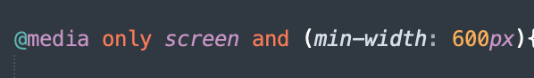

Å ha en responsive desing i nettsiden er viktig. og ha en responsive nettsiden er ikke hvor fancy nettsiden er men heller at nettsiden skal tilpasses til de ulike skjermstørrelser.
Med enkelt ord responsivt design er et design som tilpasser seg til de ulike skjermstørrelser. Det betyr at en nettside som er responsiv vil ha et design og en struktur som tilpasser seg alle ulike skjermstørrelsen som brukeren ser nettsiden fra. Dersom du ser på nettsiden fra en telefon, vil den være tilpasset skjermstørrelsen på telefonen din. det samme gjeller om du bruker en pc eller nettbret.
ubat.no

Med andre ord når du bruker CSS Media query kan du bruke CSS til å lese nettleseren og enheten og samsvarer det med en regel du setter in, for eksempel "visningskjermen er støre enn f.eks 500 px". Media query er en viktig del av og viktig å ha det til å få en responsivtet nettside, ettersom de lar deg lage forskjellige oppsett avhengig av størrelsen på visningsporten, de kan brukes til å oppdage andre ting om miljøet nettstedet ditt kjører på, for eksempel om brukeren bruker en touchscreen i stedet for en mus.
mediatyper var ikke nok til å løse alle problemer roundt det at hvordan et nettside skulle se ut og tilpasse seg alle type enheter.